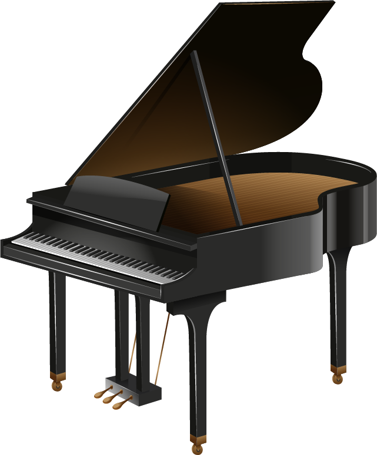

Sound Compass - Microbit Piano
The Sensors and How the Project works
Sound compass is a musical instrument made using microbit. The Microbit is a small circuit board with multiple sensors in it. For this instrument, the sensor we are making use of is the built-in compass sensor within the Microbit. When the user rotates this board at a certain angle it outputs digital keyboard/piano notes. There are 8 pre-defined musical notes for the 8 different angles at each cardinal and ordinal direction. These predefined notes make use of the built-in speakers that come with the Microbit.
What was learned
Input - Compass/Direction
The takeaway from the compass heading input we used was that it could automatically keep the values between 0 degrees to 359 degrees when rotating constantly. This made defining ranges for the sounds much easier as we never had to worry about the angle of degrees going up above 360, since the Microbit would go from 0 to 359, and vice versa, when crossing over the North direction.
Output - Musical note sounds
When trying to come up with ideas for what sounds we could produce, we discovered that the Microbit is limited to the digital notes that can be programmed with the Makecode interface. As a result, we focused on the digital keyboard that could create the notes. With hardware extensions, it is possible to produce custom sounds and have them play from the Microbit, which is something that we can explore in the future.
The Makecode Interface
The Microsoft Makecode interface taught us more about how the interactions between input and output on the Microbit happen. About the interface itself, we learned that while the block editor might have only certain blocks to use, the functionality of the blocks can be extended through Javascript or Python. This would be very handy for larger projects where more functionality was needed for hardware extensions for example, making the interface very easy to use and extend.
Makecode Github Download
You can download the makecode program here: View Project
Demo video and Instructions
Instructions to Play
- Open your Browser and open the Makecode Github link above
- Go to Microsoft Makecode and import the project from the Github URL.
- Download the project from Makecode to receive a .hex file.
- Connect your microbit to your PC/Mac using a micro USB cable.
- Drag the .hex file into your Microbit folder on your computer.
- Once the program loads on your Microbit, rotate your Microbit. At different angles you will be able to play different notes.
- Create music!